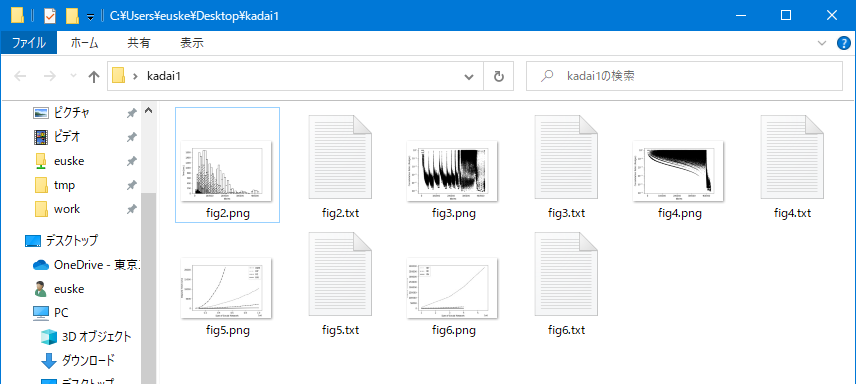

演習 3-2. 論文の図をすべて描く (= 中課題 1)
論文のグラフ 図2 〜 図6 の画像ファイル、 およびそれを生成する matplotlib のプログラムすべてを 1個の Zipファイル にまとめよ:

以下、描き方に関する説明:
- 図3 … 上で解説した。
- 図4 … 図3 を修正したもの。
使用するデータとして
cnm/ratio-join.txtではなく、hn/ratio-join-500K.txtを使えばよい。 - 図5、図6 … 前回の授業で解説した。
図2 だけは特別で、これは以下のプログラムを使って 棒グラフ (bar) を 5回表示させればよい:
import numpy as np
import matplotlib.pyplot as plt
a = np.genfromtxt("./drive/My Drive/kadai-plot-data/cnm/time-join-500K.txt")
plt.bar(a[:,0], a[:,1], 10000, edgecolor="black", color="???", label="#Nodes = 500K")
a = np.genfromtxt("./drive/My Drive/kadai-plot-data/cnm/time-join-400K.txt")
plt.bar(a[:,0], a[:,1], 10000, edgecolor="black", color="???", hatch="???", label="#Nodes = 400K")
a = np.genfromtxt("./drive/My Drive/kadai-plot-data/cnm/time-join-300K.txt")
plt.bar(a[:,0], a[:,1], 10000, edgecolor="black", color="???", hatch="???", label="#Nodes = 300K")
a = np.genfromtxt("./drive/My Drive/kadai-plot-data/cnm/time-join-200K.txt")
plt.bar(a[:,0], a[:,1], 10000, edgecolor="black", color="???", hatch="???", label="#Nodes = 200K")
a = np.genfromtxt("./drive/My Drive/kadai-plot-data/cnm/time-join-100K.txt")
plt.bar(a[:,0], a[:,1], 10000, edgecolor="black", color="???", label="#Nodes = 100K")
plt.xlabel("#Joins")
plt.ylabel("Time [sec]")
plt.legend()
plt.show()
ここで、color="???" の ??? 部分には、
white あるいは black のどちらかを入れる。
hatch="???" の ??? 部分には、
//、xx あるいは xxxx のどれかを入れると、
論文にあるのと同じ模様でグラフが描画できる。
生成する画像ファイルはすべて png形式とする。 これに加えて matplotlib の各プログラムを txt形式のファイルで保存し、 これらをひとつのフォルダの中に入れる:

- Windows の場合: フォルダを右クリックし、メニューから 送る(N) > 圧縮 (zip形式) フォルダー を選ぶと 圧縮された Zip ファイルが生成される。
- Mac の場合:
フォルダを右クリックし、メニューから
kadai1 を圧縮 を選ぶと、圧縮された Zip ファイルが生成される。

できあがった kadai1.zip を T2SCHOLA で提出すればよい。


{kind=link}
{kind=link}
{kind=link}
{kind=link}
{kind=link}
{kind=link}
{kind=link}
{kind=link}
{kind=link}